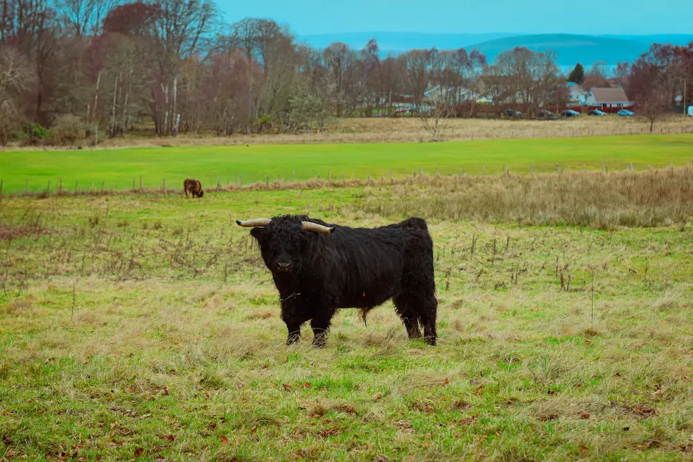
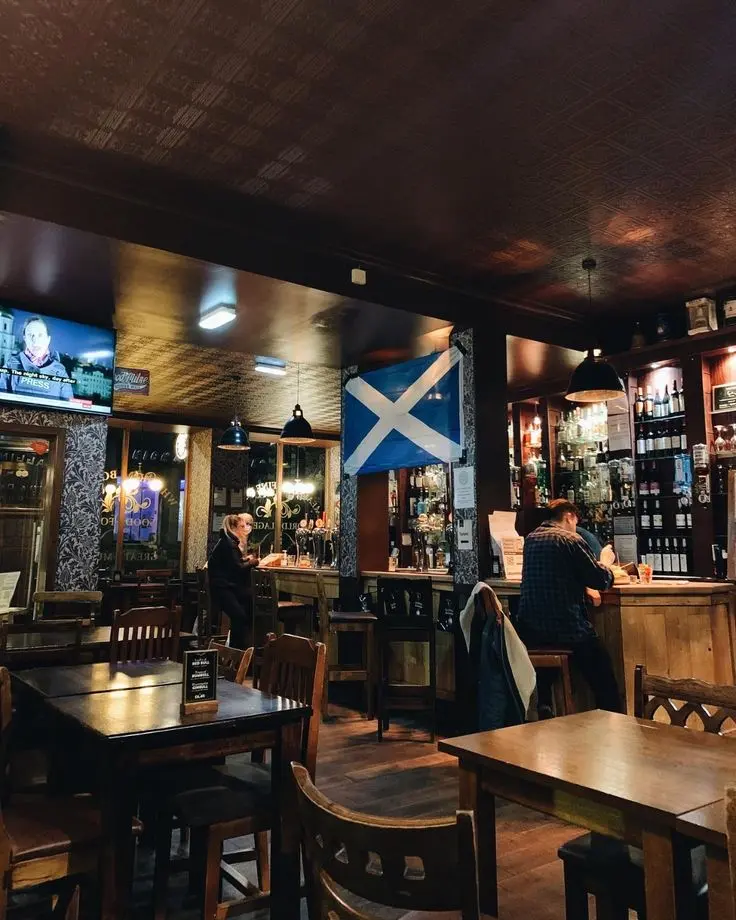
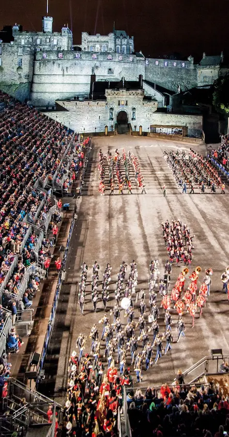
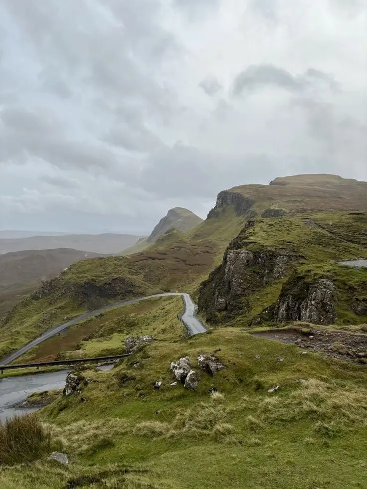
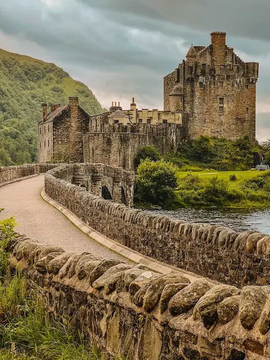

Escocia es un país donde la historia, la naturaleza y la cultura se entrelazan en la vida cotidiana de sus habitantes. A pesar del clima impredecible, los escoceses saben aprovechar su tiempo libre con una amplia variedad de actividades, tanto en interiores como al aire libre.
Uno de los pasatiempos más populares es el senderismo. Gracias a su geografía montañosa y paisajes espectaculares, muchas personas disfrutan de caminatas en lugares emblemáticos como las Highlands, la Isla de Skye o el Parque Nacional de los Cairngorms. El ciclismo también es una opción para quienes buscan explorar la naturaleza de una manera diferente, recorriendo rutas escénicas a lo largo del país. Además, Escocia es la cuna del golf, y no es raro encontrar tanto a locales como a turistas disfrutando de este deporte en campos históricos como St. Andrews.

Los deportes juegan un papel fundamental en la vida de los escoceses. El fútbol es el deporte más seguido, con una gran rivalidad entre equipos como el Celtic y el Rangers de Glasgow. El rugby también tiene una gran afición, especialmente durante el Torneo de las Seis Naciones. Para quienes buscan mantenerse en forma, el gimnasio y el running son prácticas comunes, especialmente en parques urbanos como Holyrood Park en Edimburgo o Glasgow Green.
Sin embargo, la vida social en Escocia no estaría completa sin los pubs. Más allá de ser lugares donde se consume alcohol, los pubs son espacios de encuentro donde amigos y familiares disfrutan de conversaciones animadas, música en vivo e incluso noches de trivia. Para aquellos que prefieren un ambiente más tranquilo, las cafeterías son una opción ideal, donde es común ver a personas trabajando en sus ordenadores, leyendo o simplemente disfrutando de un café con vistas a las calles históricas.

La cultura también ocupa un lugar importante en el tiempo libre de los escoceses. Durante el mes de agosto, Edimburgo se convierte en el epicentro del arte y la creatividad con el Edinburgh Festival Fringe, el festival de arte más grande del mundo. Además, celebraciones como Hogmanay, el famoso Año Nuevo escocés, o los tradicionales Highland Games, con competencias de fuerza y habilidades típicas de la región, son eventos esperados por locales y turistas.

Cuando el clima no acompaña, muchos escoceses optan por disfrutar de actividades en casa. Ver series y películas, jugar videojuegos o leer son pasatiempos comunes, especialmente en los meses de invierno. Escocia tiene una rica tradición literaria, con autores reconocidos mundialmente como Sir Walter Scott, Robert Burns y J.K. Rowling.

Por otro lado, los fines de semana suelen ser una oportunidad para hacer escapadas cortas a diferentes rincones del país. Visitar castillos históricos, recorrer pueblos pintorescos o hacer excursiones a lagos como el famoso Loch Ness son algunas de las opciones preferidas para desconectar de la rutina.
En definitiva, los escoceses disfrutan de su tiempo libre de diversas maneras, equilibrando la vida al aire libre con momentos de ocio en espacios cerrados. Su cultura, su amor por la historia y su espíritu social hacen que cada día libre sea una oportunidad para disfrutar de nuevas experiencias, ya sea explorando su impresionante naturaleza, asistiendo a eventos culturales o compartiendo una velada en un acogedor pub.
